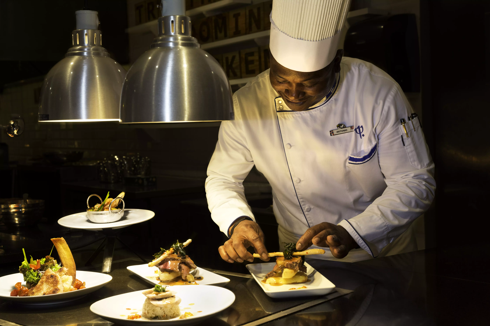

Project Details
Here you can find more information about my portfolio project and previous work experience.
Kitchen Assistant Experience

Work Overview
I worked as a Kitchen Assistant at The Everest Hotel Inn in Kathmandu, Nepal, from April 2024 to August 2025.
My Responsibilities
- Assisted chefs with preparing ingredients.
- Maintained cleanliness of kitchen equipment.
- Organised food items in storage areas.
- Followed recipes and portion guidelines.
- Checked stock levels and reported shortages.
Skills Developed
This experience helped me develop teamwork, time management, communication, and attention to detail. These skills are also useful when working on university projects and collaborating with other students.